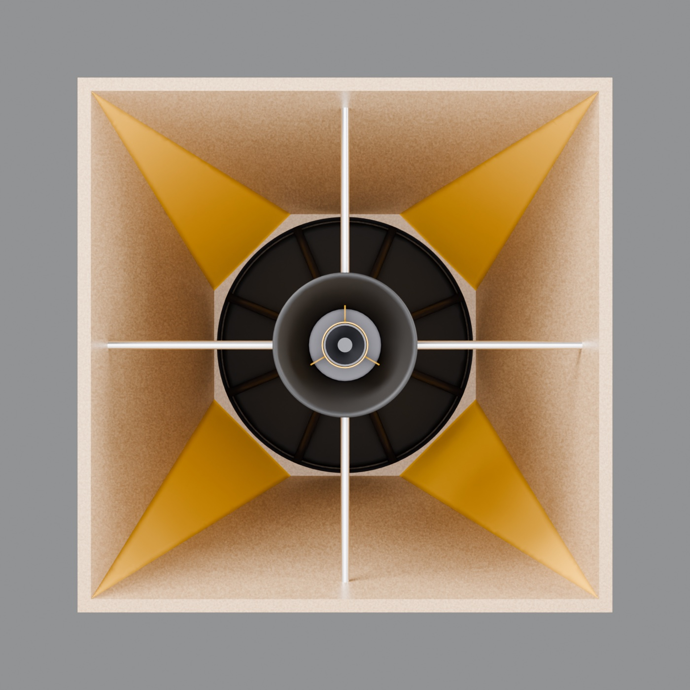
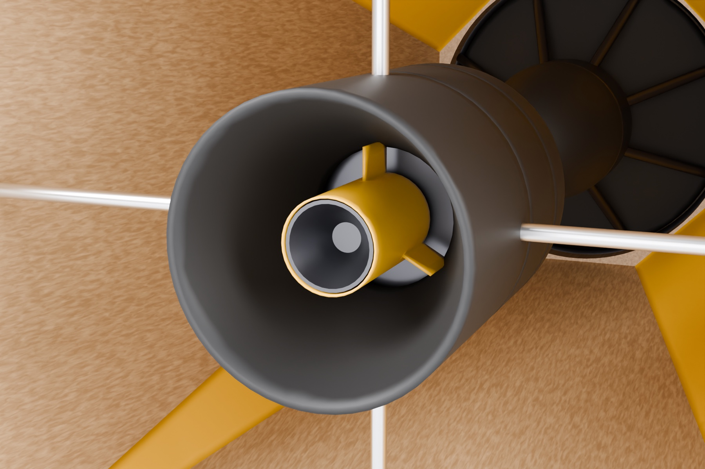

Sunflower
A three-way coaxial horn loudspeaker where each horn's phase plug is the next horn. A reversed 15 inch driver drives a flat-panel horn. A 6.5 inch midrange horn sits in its mouth and forms the low horn's centre body. A Fostex T90A tweeter sits in the throat of the mid horn as its phase plug. All three sections radiate from one axis and one mouth plane.

Status. Every number on this site is from simulation: a plane-wave horn model coupled to Thiele/Small driver models, checked with axisymmetric FEM. Nothing has been built or measured yet. The limits section lists what the models leave out.


Three horns on one axis
Low, 500 Hz down
18 Sound 15NMB420, mounted backwards so its neodymium motor points into the horn. The motor and a printed nose cone form the throat's phase plug. The cone's front works into a 25 litre sealed chamber. The horn is four flat birch-ply panels and four corner fillers, octagonal at the throat and square at the mouth.
Mid, 500 Hz to 7 kHz
Beyma 6MCF200Nd, factory sealed, loading a conical horn with a 190 mm mouth through an annular throat. The driver, horn and an elliptical tail sit in a 200 mm printed can on four aluminium rods. To the low horn, the can is the centre body.
Tweeter, 7 kHz up
Fostex T90A ring-diaphragm horn tweeter, 106 dB/W/m, in a 64 mm printed bullet. The bullet fills the centre of the mid horn throat, so the mid sound leaves through an annulus around it. The tweeter's own mouth sits 25 mm inside the mid horn.

Specification
| Value | Notes | |
|---|---|---|
| Type | Three-way coaxial horn, active | Needs a 3-way DSP crossover and three amplifier channels |
| Sensitivity | 103.9 dB | 2.83 V at the quietest section, 1 m, mean 100 Hz to 20 kHz |
| Frequency response | 81 Hz to 20 kHz, -3 dB | -6 dB at 75 Hz; on axis, after DSP |
| Crossovers | 500 Hz and 7 kHz | Linkwitz-Riley 24 dB/oct |
| Coverage | About 40 degrees above 3 kHz | Set by the 20 degree half-angle of the conical mid horn |
| Drivers | 18 Sound 15NMB420, Beyma 6MCF200Nd, Fostex T90A | All 8 ohm |
| Cabinet | 736 x 736 x 888 mm | 18 mm birch ply, 25 mm baffle |
| Low horn | 360 mm octagon to 700 mm square, 800 mm long | Flat panels, 12 degree flare |
| Mid horn | Conical, 99.4 to 190 mm, 125 mm long | Annular throat around the 64 mm bullet |

Next: how the nested horns are laid out, the simulated responses, or how to build one.